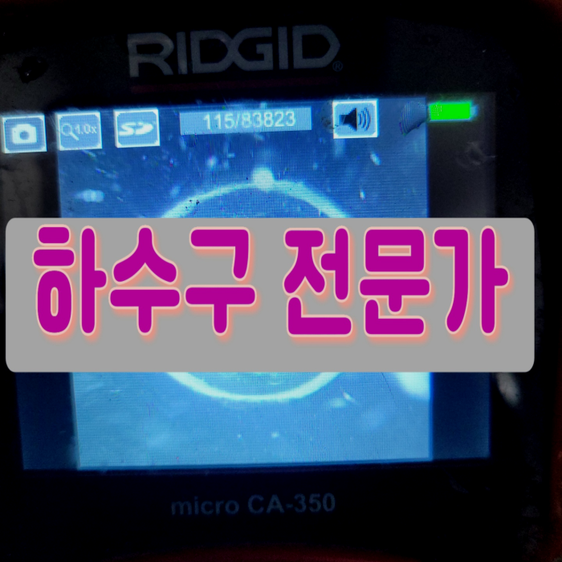
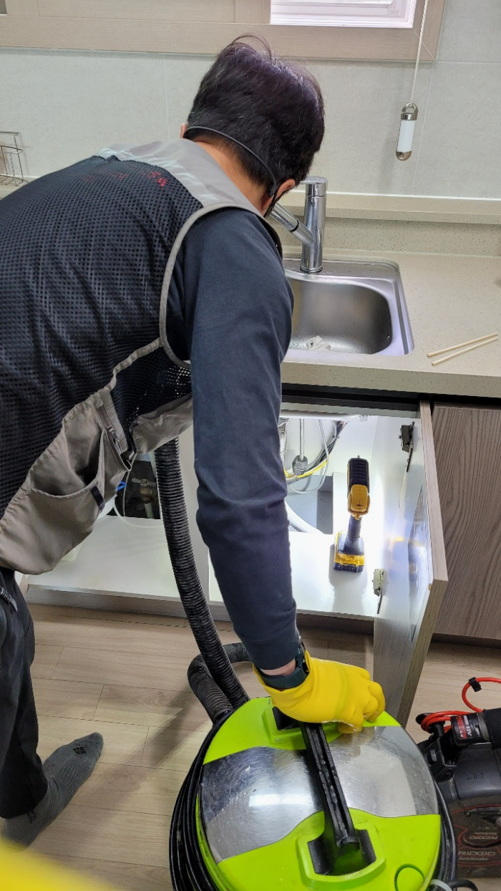
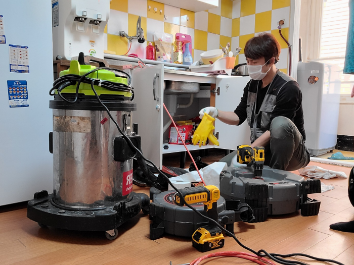
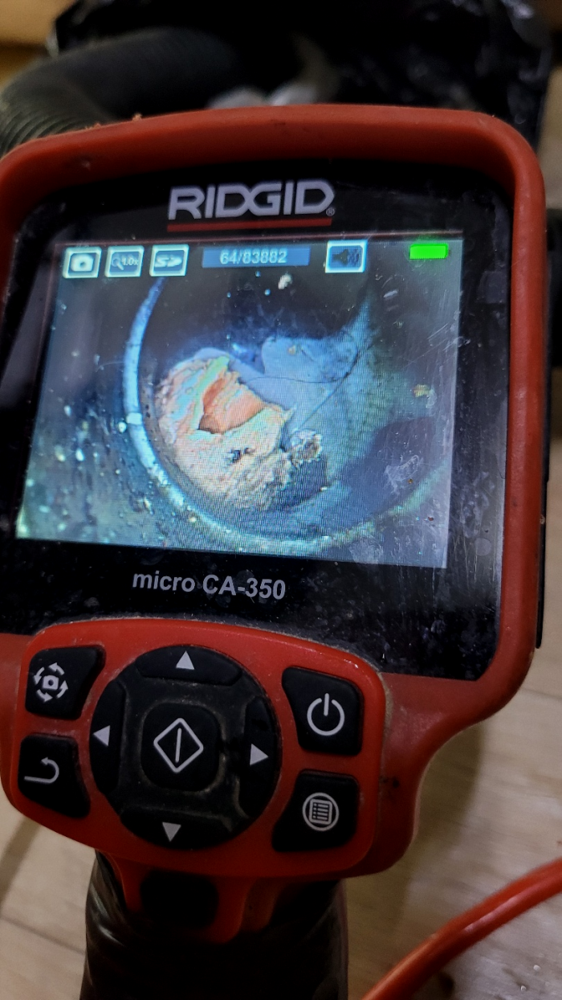
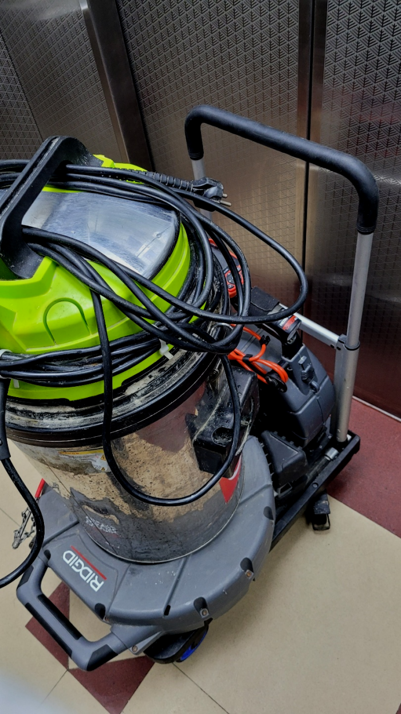
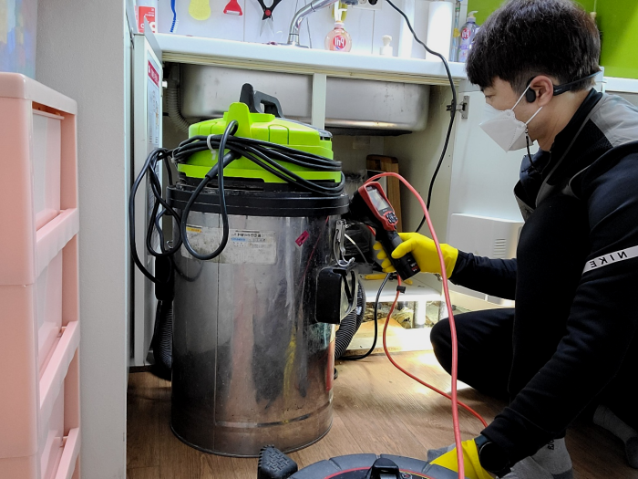
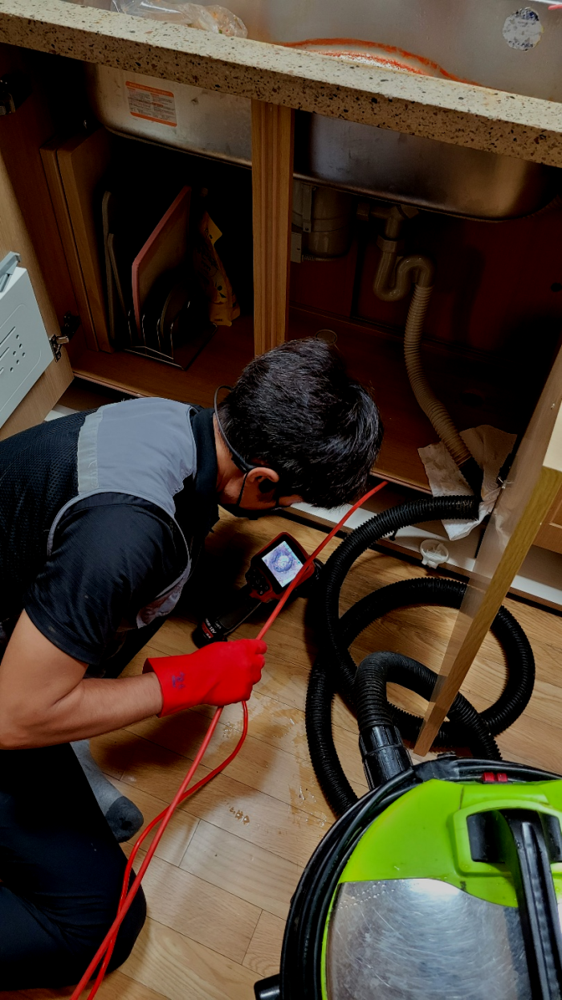

🏠 수지 죽전동 씽크대막힘 보정동 배수구악취 제거 기름때 청소 설비
용인 죽전 싱크대막힘 전문 시공 후기

📋 작업 개요
- 위치: 용인 죽전, 죽전, 용인
- 서비스 유형: 싱크대막힘, 변기막힘, 하수구막힘, 배관막힘, 역류해결, 뚫는업체, 배관청소
- 작업 일시: 2024. 1. 18. 19:55
- 업체명: 하수구수사대 (010-5615-2118)
🔍 문제 상황
반갑습니다!
설비전문업체 "하수구수사대"를 찾아주셔서 고맙습니다.
저희 업체는 수많은 장비로 해결 방법을 통해 수많은 분들의 걱정을 해결해드리기 위해 노력하고 있습니다. 저희 쪽에서 구비하고 다니는 전문장비는 막힌 하수구를 완벽하게 뚫는데 최적화 되어있습니다.

🔎 원인 분석
💡 전문가 진단: 수지 죽전동 씽크대막힘 보정동 배수구악취 제거 기름때 청소 설비
수지 죽전동 씽크대막힘 보정동 배수구악취 제거 기름때 청소 설비
무조건 저렴한 업체를 이용하시는게 정답이 아닌 이유가 바로 이것입니다. 하수도 대부분 가격을 미리 정해놓고 출동하는곳들은 어떤 상황이든 간에 같은 작업만 해주고 철수 합니다. 받은 돈 만큼만 일하기 때문입니다.
이 장비는 비교적으로 약한 전문장비이긴 하지만 시메트처럼 굳은것을 긁어서 해결하는데에는 필수라고 할 수 있습니다. 직접적으로 이물질 분쇄 작업으로 해주는 전문장비가 있으며 입구부분부터 깊숙하게 있는 이물질보다는 일단 조금은 약한 부분부터 살살 긁으면서 내려갈 구멍을 만들었습니다.

🔧 작업 과정
그간의 생활 습관들과 그 당시 일과 관련하여 어떤 시도를 하셨는지를 미리미리 체크하였습니다. 하수관뚫는업체를 콜할때까지 거의 모든 현장에서 알아서 파보는 도전 등은 대부분이 해보시는 경우도 상당히 많은데요. 그 때 하수관막힘 현장 같은 경우에도 뚫어뻥으로 무슨수를 쓰던 처리하려 했지만, 결국 성공하지 못하여 연락해주셨더라고요.
서둘러서 아무거나부으시거나 장비를무작정넣는다면 하수도모양에따라서 크랙이생겨날수있어서 손쓸방법이 없을수도있습니다.
배수배관이 막히는 원인은 다양합니다. 플라스틱 물체나 다른 딱딱한 물질로 인한 막힘은 흔한 사례 중 하나입니다. 그러나 이러한 문제는 무시되어서는 안 됩니다. 필요 없는 시공이라고 판단된다면, 납득 가능한 비용을 제안해 주는 전문가의 조언을 듣는 것이 중요합니다. 또한, 기름 때 역시 배수배관 문제를 일으킬 수 있는 요인 중 하나입니다.
어떤 하수도 작업에서든 시원찮은 장비가아니라 배수관전체 고착화된것들을 긁어내주는 플렉스샤프트와 고압등으로 맡기실때도 군더더기없게 만들고있습니다. 이런부분들은 경력이있기에 모든과정에서 깔끔할수있는거죠. 하수도배관에 남아있는것 없이 싹 뚫게된다면 석회들이 뭉치는데까지 훨씬긴시간이 걸리게되어 재발생의 가능성도 적습니다.
그래서 하수도가 막혔다고 모두가 같은 상황이 아니지요. 막힌 상황에 알맞게 수리가 들어가야 하고 그러기 위해서는 하수도설비업체의 도움이 필요합니다.


✅ 작업 완료
스케줄에 맞게 미리 조정도 해드리기 때문에 받고 싶으실 때 만족스러운 결과 보시길 바랍니다. 하수 뚫고 나서 돌아봐도 연락한 게 다행이라고 느끼시게끔 말끔하게 뚫어내겠습니다.
#하수구막힘 #하수구뚫음 #하수구역류 #씽크대막힘 #싱크대역류 #오수관막힘 #하수구청소 #욕실하수구막힘 #변기막힘 #하수구뚫는비용 #싱크대수리 #화장실막힘




⚠️ 주방 싱크대 배관 막힘 예방 수칙
- ✅ 기름기가 묻은 식기나 프라이팬은 설거지 전 키친타올로 반드시 기름때를 닦아내세요.
- ✅ 주기적으로 싱크대 개수대에 뜨거운 물을 가득 받아 한 번에 내려 배관 내부 기름을 씻어내세요.
- ✅ 배수구 거름망을 미세한 필터로 사용하시고 음식물 찌꺼기가 틈으로 새어 들지 않게 관리하세요.
- ✅ 베이킹소다와 식초를 뜨거운 물과 함께 일주일에 한 번씩 부어주면 배관 살균과 막힘 예방에 좋습니다.
💡 핵심 정리
- 확실한 장비 작업(내시경 점검 및 샤프트 스케일링)으로 원인을 뿌리 뽑습니다.
- 작업 후 1년 이내에 동일한 부위 재발 시 100% 무상 A/S 서비스를 보장합니다.
- 서울 · 경기 · 인천 전 지역에 24시간 언제든 긴급 출동할 수 있도록 항시 대기 중입니다.
❓ 자주 묻는 질문 (FAQ)
🚨 용인 죽전 싱크대막힘 문제로 고민이신가요?
정확한 원인 진단과 확실한 시공으로 재발 없는 해결을 약속드립니다.
24시간 긴급 출동 | 서울 · 경기 · 인천 전지역 | 1년 내 재발 시 무상 A/S